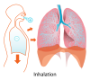

inhalation

Definition: Inhalation (or inspiration) is the process of drawing air or other gases into the respiratory tract, primarily for the purpose of bringing oxygen into the body. It is a fundamental physiological function in humans and many other organisms, essential for sustaining life. Inhalation is the first phase of breathing, allowing the exchange of oxygen and carbon dioxide between the body and the environment, vital for the body's metabolic processes. This article delves into the mechanics of inhalation, its significance in various contexts, and its potential impact on health.
Source: Wikipedia
Wikipedia Page (Something wrong with this association? Let us know.)
Wikidata Page (Something wrong with this association? Let us know.)